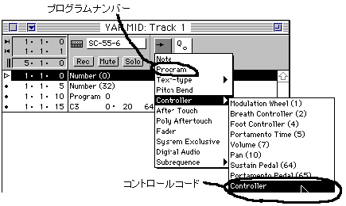
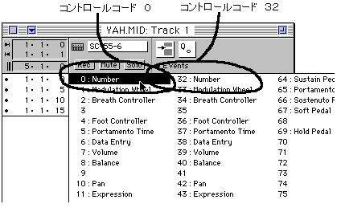
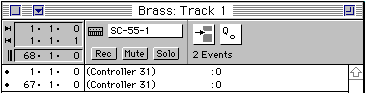
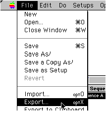
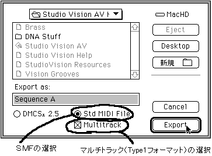

ＶｉｓｉｏｎＡＶでの例を以下に載せますが、他のシーケンスソフトでも基本的には同様です。
図2-31 VisionAVを使用したコントロールコードの挿入例

コントロールコードの場合には、以下のように、挿入したコントロールコードの位置をマウスクリックして、０および３２の設定をします。
図2-32 コントロールコードの設定

このソフトウェアは、「Ｎｕｍｂｅｒ（０）」となっていますが、日本語版のソフトウェアは、「コントロール（０）」となっているものもあります。
また、ポップアップメニューがでないで、（）の位置にマウスを合わせて、クリックすると番号が上下するソフトウェアもあります。
その他にＢＧＭなどで曲をループさせるには、ループの先頭と最後に、コントロールコード３１の０番を入れることにより可能となります。
ループ情報は１つのトラックに入れておけばよいものなので、ループ情報だけを入れたトラックを作っておくと、後で見て分かり易いでしょう。
以下はその例です。
図2-33 ループ情報用トラック例

ＭＩＤＩイベントの挿入方法はコントロールコードの挿入例と全く同じです。
保存
保存は、ＳＭＦファイルのマルチトラックで保存します。 まず、ファイルメニューのエクスポートを選択します。
図2-34 ファイルの保存（エクスポート）

続いて、以下のような画面が表示されますので、ＳＭＦと、Ｔｙｐｅ１フォーマットを指定します。
図2-35 ファイル保存（エクスポート）時の設定
